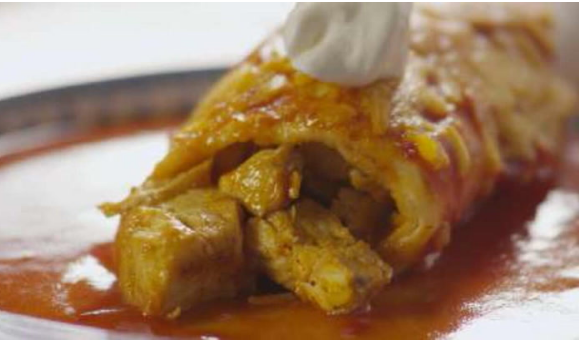

Description
This chicken enchilada recipe is easy to make with tortillas,
tender chicken, and a deliciously cheesy sauce for a family-pleasing
Mexican meal. This chicken enchilada recipe couldnt be easier to make
with simple ingredients.
In an oven preheated to 350 degrees F, these chicken enchiladas should be
perfectly cooked in about 20 minutes. Youll know the enchiladas are done
when they are heated through and the cheese is melted. Store your leftover
chicken enchiladas in an airtight container in the refrigerator for two to
three days.
Ingredients
- 1 tablespoon olive oil, or as needed
- 4 skinless, boneless chicken breast halves
- 1 onion, chopped
- 1 ¾ cups shredded Cheddar cheese, divided
- ½ pint sour cream
- 1 tablespoon dried parsley
- ½ teaspoon dried oregano
- ½ teaspoon ground black pepper
- 1 (15 ounce) can tomato sauce
- ⅓ cup chopped green bell pepper
- 1 clove garlic, minced
- 1 tablespoon chili powder
- ½ teaspoon salt (Optional)
- ½ cup water (Optional)
- 8 (10 inch) flour tortillas
- 1 (12 ounce) jar taco sauce
Steps
- Preheat the oven to 350 degrees F (175 degrees C).
- Heat oil in a nonstick skillet over medium heat.
Add chicken and cook until no longer pink and juices run clear,
5 to 7 minutes per side.
- Transfer chicken to a cutting board and slice into cubes. Return
chicken to the skillet.
- Add onion, 1 cup Cheddar cheese, sour cream, parsley, oregano,
and black pepper. Cook and stir over low heat until cheese melts.
Stir in tomato sauce, green pepper, garlic, chili powder, and salt.
Add water if needed.
- Spoon chicken mixture into tortillas and roll into enchiladas.
Arrange enchiladas, seam-side down, in a 9x13-inch baking dish.
Top with taco sauce and remaining 3/4 cup Cheddar cheese.
- Bake in the preheated oven, uncovered, until cheese has melted,
about 20 minutes. Let cool briefly before serving.